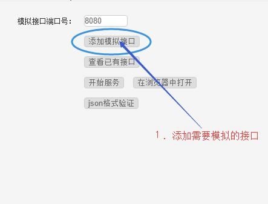
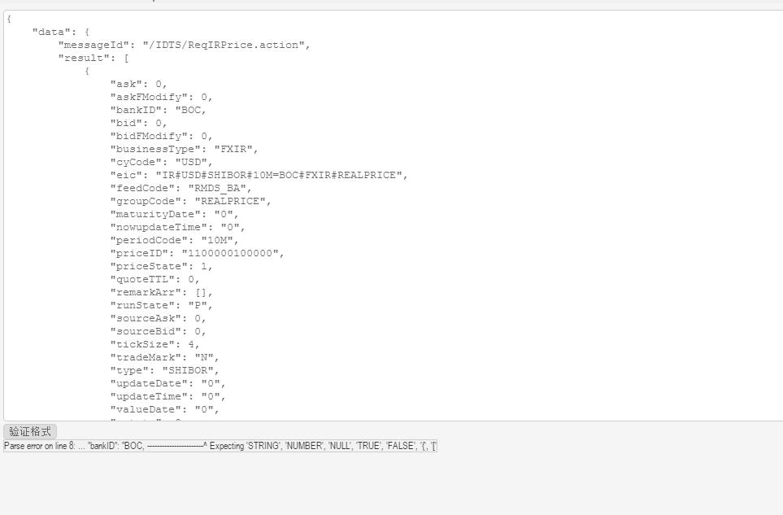

3. 返回至主界面，启动服务
3. 返回至主界面，启动服务该工具可以模拟本地的http服务后端接口，以方便前端联调接口，支持多种请求类型，自定义url和参数。
本工具下载地址： http://www.lovewebgames.com/app/mock/mock.exe 或者 http://www.react-cn.com/app/mock/mock.rar
源码地址：https://github.com/tianxiangbing/mock
 2. 输入接口必要信息，添加进配置文件
3. 返回至主界面，启动服务


每一次接口和添加或修改，必须重启服务才会生效
主界面的json格式验证，提供一个快捷的json格式验证和格式化工具.
